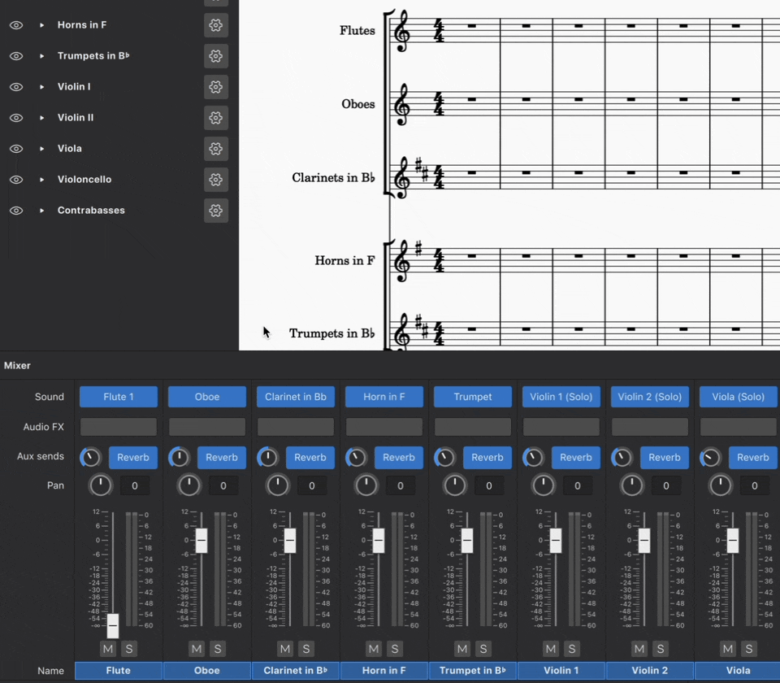
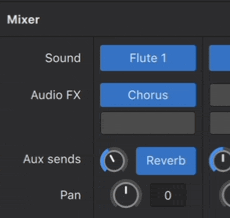
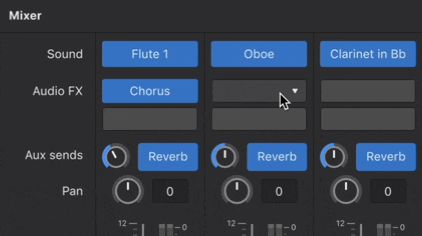
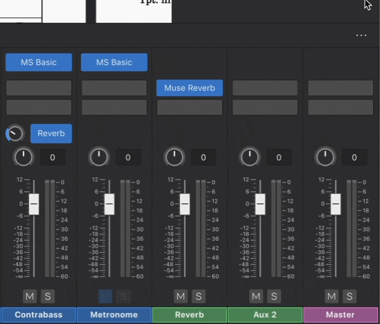

Mixer
Overview
The mixer allows you to
- Change instrument sounds (without affecting the staff notation).
- Load virtual instruments and effects.
- Adjust volume and panning, and make other adjustments to the playback for each stave.

The mixer is divided into a number of color-coded channel strips:
- Instrument: Each instrument in the score has its own channel, with the name of the instrument at the bottom (marked in accent color blue above). An instrument channel is also created for each mid-score instrument change applied to a staff.
- Metronome: Mute or unmute the metronome and change its sound, panning, and volume (also marked in blue).
- Aux 1/Aux 2: These are the auxiliary channels (marked in green) and may be used to house VST effects units. Aux 1 by default contains Muse Reverb (see below).
- Master: The master fader (marked in pink) controls the overall audio signal level of this MuseScore Studio project.
Opening the mixer
You can display/hide the mixer by:
- Clicking on the Mixer button in the Note input toolbar.
- Clicking View→Mixer.
- Using the shortcut F10.
Note: If the instrument channel strips are not in the same order as the instruments in the score, try closing and reopening the Mixer again.
Mixer controls
A channel strip contains the following controls (from top to bottom):

- Sound: See below.
- Audio FX: See below.
- Aux sends: See below.
- Pan: Click and drag on the Pan knob to move the audio track to the left or right in the stereo sound field. Double click on the knob to return Pan to the center position.
- Volume: Click and drag the fader to increase or decrease playback volume. Double click on the fader to return it to the default level, 0 dB.
- Mute and Solo: Click on the Mute button to silence the track; click again to unmute it—and so on. The Solo button silences all other tracks allowing you to hear only the soloed track. Multiple selection of Solo and Mute buttons is possible, allowing you to conveniently isolate any combination of instruments.
- Name: Note that this name is not affected by any changes made to the instrument name in the score.
Click the three dot icon in the upper right corner of the Mixer panel to show / hide a control. For example, you can hide the Volume faders to save up vertical screen space for score viewing.
Sound
The row labelled Sound shows the virtual instrument set used in each track. This can be either a SoundFont (.sf2,.sf3) such as MS Basic, a VST instruments (VSTi), or a Muse Sound. If you have selected a particular sound from within that instrument set then the sound's name will be displayed instead of the set's name.
To change an instrument's sound
- Mouse over the name of the virtual instrument set (in the row marked “Sound”)
- Click the dropdown button that appears
- Locate and click on an item from the dropdown menu.
Note: This changes the instrument's sound, but has no effect on instrument's notation. If you want the staff to be updated as well, say, with correct transposition and clef changes, see Choose instruments.
Starting with MuseScore 4.2, it is now possible to use this method to choose individual sound from within a SoundFont. If you're using an older version of MuseScore 4, use the workaround detailed in SoundFonts.
SFZ files are supported but only by using a VST sampler; see SoundFonts.
Audio FX
Each row (slot) under the Audio FX allows you to add an extra VST effect or Muse Reverb (a native effect). Audio is processed through the Audio FX from top to bottom.
- Find VSTi inside Sound drop-downs, and find VST effects inside Audio FX drop-downs.
- To apply Audio FX(s) to one instrument, add Audio FX to the corresponding instrument strip.
- To easily apply the same Audio FX(s) to multiple instruments, use Aux sends.
To add an Audio FX plugin
- Hover over an empty Audio FX slot
- Click the dropdown button that appears
- Locate and click on a plugin from the dropdown menu .
- The plugin will load as a separate window on top of the Musescore window.
- When you add one effect, a new empty row (slot) is created automatically to allow adding further effect. Repeat these steps to add more effect.

To disable an Audio FX plugin
- Hover over an Audio FX slot
- Click on the power icon that appears.
This deactivates the plugin without removing it from the mixer.

To remove an Audio FX plugin
- Hover over an Audio FX slot
- Click the dropdown button that appears
- Click No effect.

Muse Reverb
Muse Reverb is MuseScore’s native reverb unit. A fixed amount of reverb is added by default to each instrument—you can adjust the amount for each channel using the Aux send knobs next to the blue buttons labelled "Reverb". The effect can be toggled on/off for each channel by clicking on the same buttons. You can also adjust the Muse Reverb output volume using the Aux 1 fader.
Aux sends
Each row (slot) under the Aux sends adjusts how much of a corresponding Aux channel effect(s) is added to the audio created for an instrument.
There are two Aux sends, corresponding to the two aux channels:
- The first row adjusts how much of Aux channel 1 Aux 1 is added onto the current instrument, it is shown as Reverb by default, because Aux 1 contains Muse Reverb by default.
- The second row adjusts how much of Aux channel 2 Aux 2 is added onto the current instrument, Aux 2 does not contain any Audio FX by default.
- Both of the two aux sends are enabled by default for each instrument, and can be disabled individually. Audio is processed with Aux 1 then Aux 2.
- You can also apply audio effect(s) to one instrument only by adding Audio FX.

To show/hide an Aux send row (slot)
- Click the three dot icon in the upper right corner of the Mixer panel
- Hover over View
- Click Aux send 1 and/or Aux send 2.

To disable an Aux send row (slot)
- Make sure the Aux send is visible
- Click Reverb to turn off Aux send 1 OR Click Aux 2 to turn off Aux send 2.

Aux channels
Aux channels are special channels to simplify audio FX application. You can set up audio FX(s) in one Aux channel and then apply them to multiple instruments.
There are up to two Aux channels in each score:
- Aux 1: contains the Muse Reverb by default, but you can remove this and replace it with any Audio FX(s) you like.
- Aux 2: is empty by default.
To show/hide Aux channels
By default, aux channels are hidden. To show/hide a aux channel:
- Click the three dot icon in the upper right corner of the Mixer panel
- Hover over View
- Click Aux channel 1 and/or Aux channel 2.

To add Audio FX to an Aux channel
The process is the same as adding Audio FX(s) to an instrument channel, see To add an Audio FX.
If there is only one Audio FXin an Aux Channel, the channel strip and its corresponding aux send are labelled by the name of the Audio FX. If there is more than one, they are labelled Aux 1 and Aux 2. You may need to save and reopen the score to see the labels update.
To adjust an Aux channel's level
Aux channel strips have volume faders. This changes the volume of the effect across all channel strips with the corresponding aux send turned on. Think of this as setting the maximum volume of the effect(s) that an instrument channel can receive.
To apply the effect(s) of an Aux channel to an instrument
To adjust how much effect of an Aux channel come through on each instrument, use the knob in the corresponding Aux sends row (slot) on that instrument channel strip, see Aux Sends.